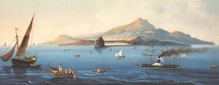
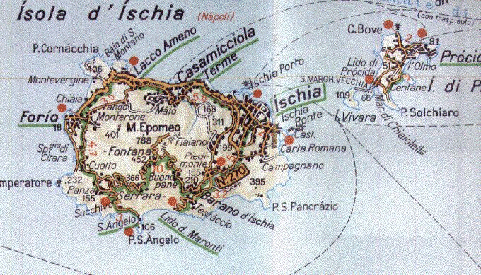

Боккаччо при дворе Джованны I Неаполитанской (1892, художник Пабло Салинас)
На Искии, острове, находящемся близ Неаполя, жила-была красивая и пребойкая девушка по имени Реститута, дочь одного знатного островитянина по имени Марино Болгаро, девушку же эту любил больше собственной жизни юноша Джанни, проживавший на соседнем островке, который носит название Прочида, а девушка любила его. Днем Джанни приезжал с Прочиды на Искию повидаться со своею возлюбленною, но этого ему было мало: ночью, за неимением лодки, он переплывал разделявшее эти два острова расстояние единственно для того, чтобы поглядеть хоть на стены ее дома. И вот в пору столь бурного течения их страсти в один прекрасный летний день девушка гуляла одна на берегу моря, меж скал, отделяя ножом ракушки от камней, и набрела на ущелье; здесь было тенисто, по дну ущелья студеный протекал ключ, и это, видимо, соблазнило ехавших из Неаполя на фрегате юных сицилийцев расположиться здесь на отдых. Девушка их не приметила, они же, сойдясь во мнении, что она — красотка, и уверившись, что никто ее не сопровождает, решились похитить ее и увезти и мигом перешли от слов к делу. Как девушка ни кричала, они схватили ее, посадили на фрегат и отчалили.

Остров Искья. Гуашь, 19 век
Джанни, принимавший это событие к сердцу ближе, чем кто-либо другой, не стал дожидаться, пока что-нибудь узнают на Искии, разведал, в каком направлении отбыл фрегат, сел на свой корабль и с наивозможной для него скоростью проехал вдоль побережья от Минервы до Скалеи, что в Калабрии, всюду расспрашивая о девушке, и в Скалее ему сообщили, что девушку сицилийские моряки увезли в Палермо. Джанни полетел туда на всех парусах и, после продолжительных поисков дознавшись, что девушку отдали королю и что ее держат в Кубе, пришел в отчаяние и почти утратил надежду не только вызволить, но хотя бы увидеть ее. Любовь, однако ж, его удержала; он отпустил фрегат и решился остаться в Палермо, где никто его не знал.
Перевод Н.Любимова
…non avendo trovata barca,
E durante questo amore così fervente, avvenne che, essendo la giovane un giorno di state tutta soletta alla marina, di scoglio in iscoglio andando marine conche con un coltellino dalle pietre spiccando, s'avvenne in un luogo fra gli scogli riposto, dove sì per l'ombra e sì per lo destro d'una fontana d'acqua freddissima che v'era, s'erano certi giovani ciciliani, che da Napoli venivano, con una lor fregata raccolti.
Essi, quantunque ella gridasse molto, presala, sopra la lor barca la misero, e andar via;
Ma Gianni, al quale più che ad alcuno altro ne calea, non aspettando di doverlo in Ischia sentire, sappiendo verso che parte n'era la fregata andata, fattane armare una, su vi montò, e quanto più tosto potè, discorsa tutta la marina dalla Minerva infino alla Scalea in Calavria, e per tutto della giovane investigando nella Scalea gli fu detto lei essere da marinari ciciliani portata via a Palermo.
Là dove Gianni, quanto più tosto potè…
…mandatane la fregata, veggendo che da niun conosciuto v'era, si stette

Острова Искья и Прочида.